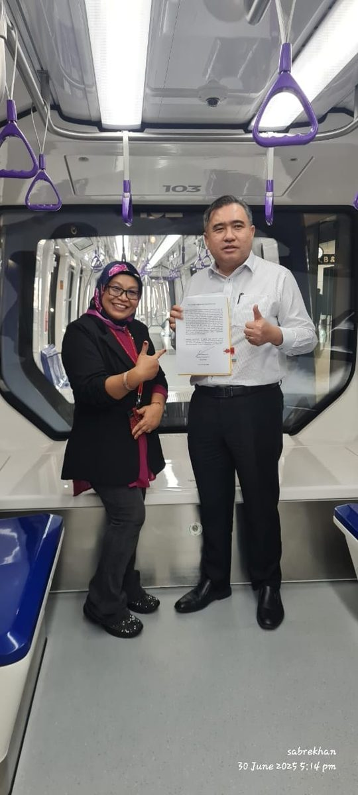

Aerotrain: a year from first train to service, and a lesson in courage
29 August 2025 · Ir. Ts. Dr. Bibi Sabrena Sakandar Khan
29 August 2024
A date to remember: the very first Aerotrain arrived at KLIA!
We were there, eyes wide at 4:00 am, waiting for six massive loaders to arrive and unload. The energy? Off the charts. The relief? Even more.
Everything was executed safely and smoothly, with a few nervous laughs in between. We were all buzzing with excitement, every one of us trying to make sure everything was perfect. It was pure, beautiful teamwork.
29 August 2025
Fast forward a year, and now all three train sets are running at KLIA. Seeing them glide in service? Honestly, chills.
What I really want to talk about: courage
Real courage shows up not in calm moments, but in chaos. When things get messy. When you're putting out fires, not lighting them. When people doubt, question or ignore you, and you keep pushing anyway.
Because bravery isn't loud. It's the quiet choice to stand firm, to act smart, and to rise even when it's easier to fold.
You only discover how resilient you are when you're under pressure. When you're cornered by complexity. And when decisions demand not just knowledge, but bravery.
It's the kind of courage that mirrors our Merdeka spirit: rising through challenges, standing tall under pressure, and believing in progress even when the odds seem stacked.
Just as our nation gained its independence through grit and resilience, this project reminded us that freedom also means taking ownership, acting boldly and never giving up, even when it's hard.
Proud of the journey. Humbled by the team.
The courage to act swiftly, wisely and with heart is what drives real progress. That's what this journey taught me, and maybe it will speak to you too. Insya Allah.
First published on LinkedIn, 29 August 2025.